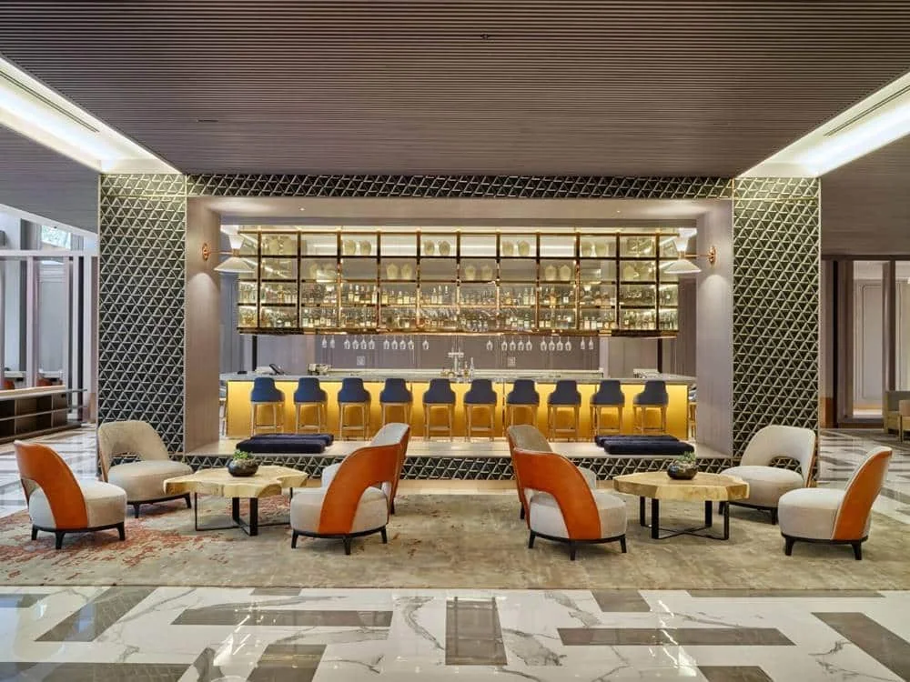
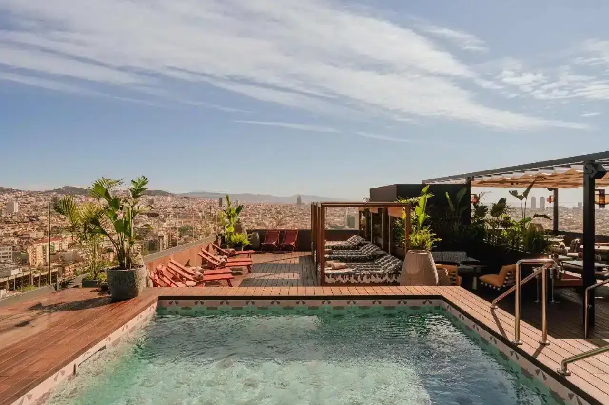
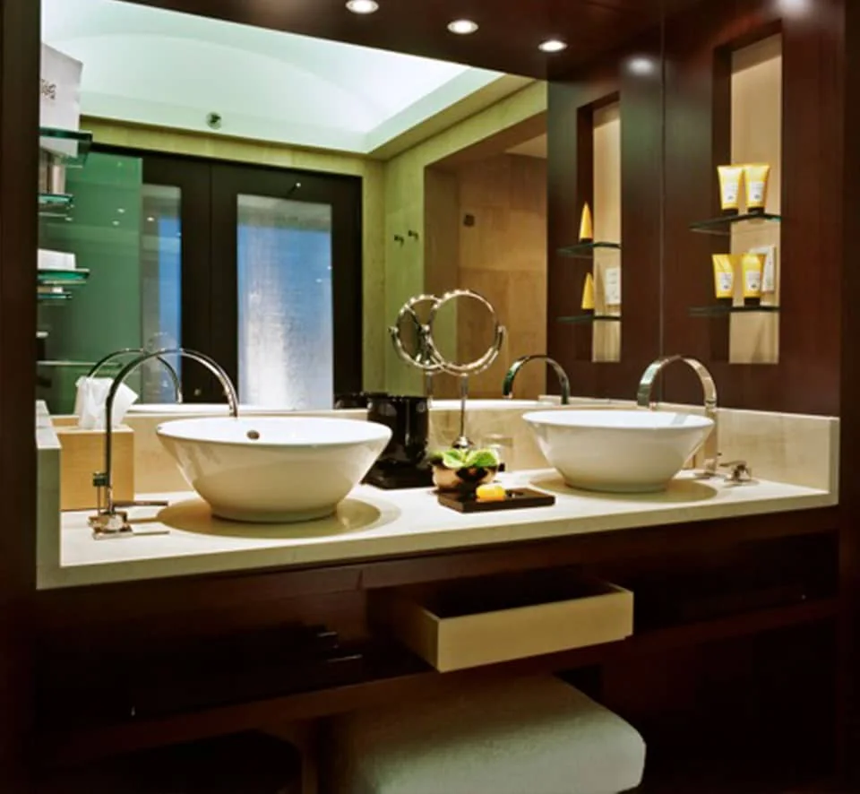

Mandarin Oriental, Barcelona
Suites de 80 m² diseñadas por Patricia Urquiola. Lavabos y bañeras Agape, grifería Axor, cerámica Mutina.
Asesoramiento en baños, pavimentos y revestimientos para arquitectos, interioristas y particulares. Barcelona, desde 1977.
Tú imaginas el espacio. Nosotros elegimos contigo cada material y cada pieza, entre las marcas que están en nuestros dos showrooms, y respondemos hasta la instalación.
Dos showrooms en el Eixample, a tres minutos a pie: baños en Gran Via de les Corts Catalanes 494 y pavimentos y revestimientos en Viladomat 118.

Más de cien firmas en exposición, de Dornbracht a Mutina. Lo que no está en los showrooms lo buscamos en la Bagnoteca, nuestra biblioteca de catálogos.
Socio fundador de BACO, la central de compras del sector, desde 2003.
Suites de 80 m² diseñadas por Patricia Urquiola. Lavabos y bañeras Agape, grifería Axor, cerámica Mutina.

Con el arquitecto Ignacio Comella. Piezas Classici de Rex y Cerim cortadas a medida para los mosaicos de recepción y restaurantes.

259 habitaciones. Porcelánico de imitación hidráulica diseñado a medida por Cevica para la piscina; celosías de Cerámicas Cifre.

Con GCA Arquitectos. Grifería MEM de Dornbracht con un caño fabricado en exclusiva; bañeras Kaldewei y Duravit por Philippe Starck en las suites.
También Ohla, ABaC, Mercer, Gran Derby y Alexandra en Barcelona; EME en Sevilla, The Hotel en Bruselas, The Dostyk en Almaty; Mas d’en Bruno en el Priorat; los restaurantes Dos Manos, La Florentina y NOBOOK; y las Cases Singulars de l’Empordà en Pals y Albons.
Todos los proyectosSi eres arquitecto o interiorista, reserva hora en este espacio del showroom de Viladomat y trabaja o reúnete con tus clientes con todos los materiales y la Bagnoteca, nuestra biblioteca de catálogos, al alcance de la mano.
Reservar hora
Francesc Romero, Marc Garriga, Jordi Rigau, Javi Aragón, Xavier Martínez, Ángeles Carmona, Fina Gómez, Gabriel Castells, David Castilla, Daniel Rodríguez, Pere Mestre, Lourdes Martínez, Mauricio Iscoa, Xavier Lozano, Silvia Gatell, Fabio Ruau y Carme Vidal.
Fundada por Tono Rigau. Un equipo que conoce las marcas, los productos y la obra, y que te acompaña de la muestra a la instalación. Conoce al equipo